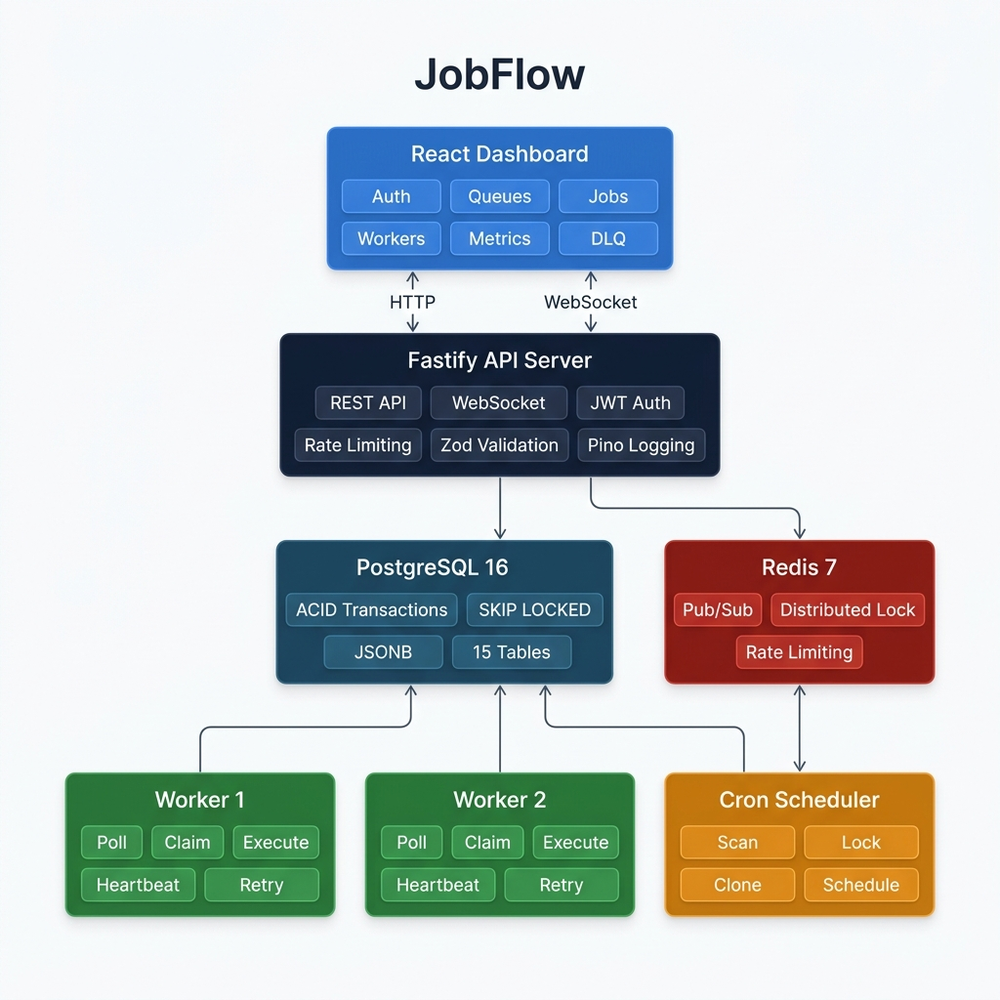
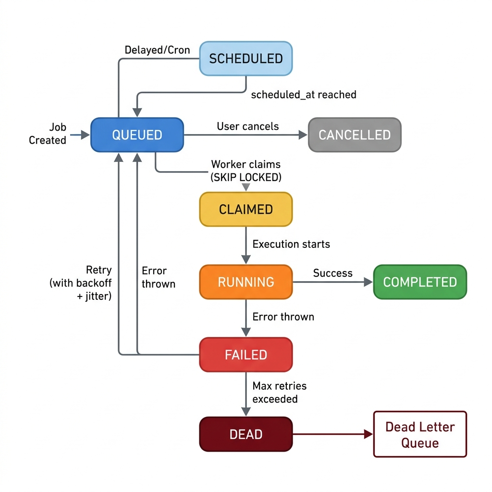
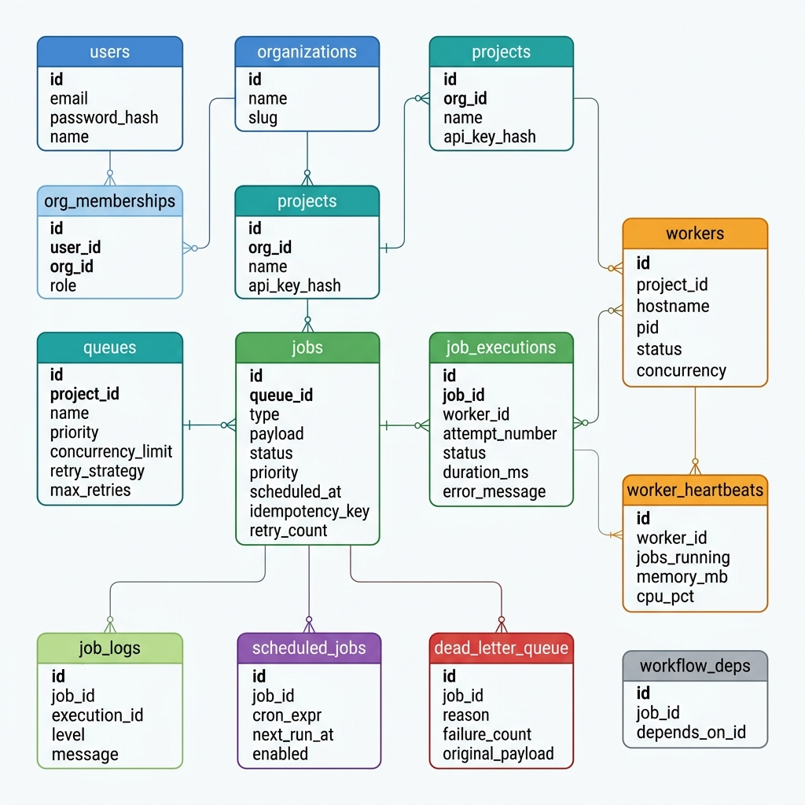
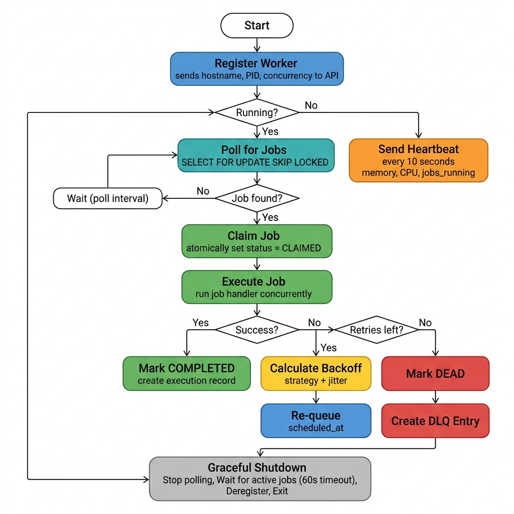

JobFlow is a production-grade distributed job scheduling platform that reliably executes asynchronous background jobs across multiple workers. It implements multi-tenant authentication, configurable job queues, five job scheduling modes, a worker service with atomic claiming and graceful shutdown, a complete job lifecycle with retry strategies and Dead Letter Queue support, and a real-time monitoring dashboard.
| Type | Description |
|---|---|
| Immediate | Dispatched to a worker on the next poll cycle |
| Delayed | Held for a specified duration before becoming claimable |
| Scheduled | Runs at a specific future date and time |
| Recurring | Repeating execution using standard cron expressions |
| Batch | Up to 1,000 jobs submitted atomically in a single request |
| Layer | Technology |
|---|---|
| API Server | Node.js, Fastify 4, TypeScript 5.7 |
| Database | PostgreSQL 16 |
| Cache / Pub-Sub | Redis 7, IORedis 5 |
| ORM | Prisma 5 |
| Auth | JWT + bcrypt |
| Validation | Zod 3 |
| Logging | Pino 9 |
| Frontend | React 19, Vite 8 |
| Charts | Recharts 3 |
| Data Fetching | TanStack Query 5 |
| Testing | Vitest 2 |
| Containers | Docker, Docker Compose |

API Server — Stateless HTTP and WebSocket server built on Fastify. Handles all client requests, validates input with Zod schemas, and publishes job events to Redis for real-time dashboard updates.
Worker Service — Independent process that polls PostgreSQL for claimable jobs, executes them concurrently up to a configurable limit, sends heartbeats, handles retries, and routes permanently failed jobs to the Dead Letter Queue. Multiple worker instances can run in parallel with zero coordination overhead.
Cron Scheduler — Separate process that scans the scheduled_jobs table every minute. Acquires a Redis distributed lock before processing to prevent duplicate scheduling in multi-instance deployments. Each trigger creates a new job row, preserving complete execution history per cron run.
PostgreSQL — Single source of truth for all job state. Uses SELECT FOR UPDATE SKIP LOCKED for atomic job claiming, JSONB columns for flexible payloads, and composite indexes for efficient polling queries.
Redis — Provides distributed locking for the cron scheduler, pub/sub for broadcasting events to WebSocket clients across API instances, and backing storage for rate limiting. The system degrades gracefully if Redis is unavailable.
| Component | Strategy |
|---|---|
| API Server | Stateless; scale horizontally behind a load balancer |
| Workers | Horizontal scaling; SKIP LOCKED handles contention automatically |
| Scheduler | Single active instance via Redis distributed lock |
| PostgreSQL | Vertical scaling; read replicas for analytics queries |
| Redis | Single node; Sentinel or Cluster for high availability |

A job transitions through states atomically. Workers claim jobs using SELECT FOR UPDATE SKIP LOCKED, which guarantees that no two workers can claim the same job simultaneously — even when hundreds of workers poll the same queue concurrently.
The schema consists of 15 normalised tables with full referential integrity and cascading deletes. The Prisma schema is defined in backend/prisma/schema.prisma.

| Table | Purpose |
|---|---|
users | User accounts with bcrypt-hashed passwords |
organizations | Multi-tenant root entity with unique slug |
org_memberships | Role-based access control: Owner, Admin, Member |
projects | Isolation boundary; stores bcrypt-hashed API keys |
queues | Job queues with embedded retry policy, concurrency limits, rate limiting |
jobs | Central table with JSONB payload, status machine, idempotency key |
job_executions | One row per attempt; records timing, result, and full error stack |
workers | Self-registered worker processes with heartbeat tracking |
worker_heartbeats | Time-series telemetry: memory, CPU, active job count |
job_logs | Append-only structured log entries per execution |
scheduled_jobs | Cron template with next_run_at tracking |
dead_letter_queue | Permanent failure records with requeue and resolve workflows |
workflow_deps | DAG edges for job dependency ordering |
| Table | Index | Purpose |
|---|---|---|
jobs | (queue_id, status, scheduled_at) | Worker claim query — the critical hot path |
jobs | (status, scheduled_at) | Scheduled job promotion |
jobs | (batch_id) | Batch job lookups |
job_executions | (job_id) | Execution history per job |
job_executions | (worker_id) | Active jobs per worker |
job_logs | (job_id, timestamp) | Log streaming |
worker_heartbeats | (worker_id, timestamp) | Latest heartbeat lookup |
scheduled_jobs | (enabled, next_run_at) | Cron scanner query |
dead_letter_queue | (queue_id, failed_at) | DLQ listing |
(queue_id, status, scheduled_at) is specifically designed for the worker's claim query, which filters by queue, status = QUEUED, and scheduled_at ≤ now(). This is the single most performance-critical query in the system.
The backend is built on Fastify with TypeScript. The server registers plugins for CORS, JWT, rate limiting, WebSocket, and Swagger documentation in server.ts.
| Capability | Implementation |
|---|---|
| Authentication | JWT (7-day expiry) for dashboard; bcrypt-hashed API keys for programmatic access |
| Input validation | Zod schemas on all request bodies and query parameters |
| Error handling | Centralised handler mapping Zod, Prisma, and application errors to structured JSON |
| Rate limiting | @fastify/rate-limit backed by Redis for distributed enforcement |
| Logging | Pino structured JSON logger; pretty-printed in development |
| WebSocket | Per-project rooms with Redis pub/sub bridge for multi-instance deployments |
| File | Endpoints | Key Operations |
|---|---|---|
auth.ts | register, login, me | Password hashing, JWT signing, org creation |
projects.ts | CRUD, rotate-key | API key generation and hashing |
queues.ts | CRUD, pause, resume, stats | Live job count aggregation, time-series stats |
jobs.ts | create, batch, list, cancel, retry | All five job types, idempotency, pagination |
workers.ts | register, heartbeat, list | Auto-offline detection (>30s without heartbeat) |
metrics.ts | throughput, system health | Time-bucketed aggregation, queue breakdown |
dlq.ts | list, requeue, resolve | Re-queue workflow, resolution tracking |
websocket.ts | WS events | Per-project rooms, Redis pub/sub bridge |

The worker in worker/runner.ts follows a continuous loop:
SELECT FOR UPDATE SKIP LOCKED to atomically transition a job to CLAIMEDThe scheduler in worker/scheduler.ts runs as a separate process. It acquires a Redis distributed lock (SET key NX PX 55000) to ensure single-instance execution, scans for due cron jobs, clones each template into a new job row, and updates the next_run_at timestamp.
The worker uses the following raw SQL to claim jobs:
UPDATE jobs SET status = 'CLAIMED', updated_at = NOW()
WHERE id = (
SELECT id FROM jobs
WHERE queue_id = $1
AND status = 'QUEUED'
AND scheduled_at <= NOW()
ORDER BY priority DESC, created_at ASC
FOR UPDATE SKIP LOCKED
LIMIT 1
)
RETURNING *FOR UPDATE SKIP LOCKED acquires a row-level lock on the selected job and skips any rows already locked by other transactions. This guarantees no two workers can claim the same job, workers never block each other, and no external coordination system is required.
| Strategy | Delay Formula |
|---|---|
| Fixed | retryDelayMs |
| Linear | retryDelayMs × attemptNumber |
| Exponential | retryDelayMs × multiplier(attempt - 1), capped at retryMaxDelayMs |
All strategies apply ±10% random jitter to prevent synchronised retry storms when a downstream service outage causes many jobs to fail simultaneously.
On SIGTERM or SIGINT, the worker stops accepting new jobs, waits up to 60 seconds for active jobs to complete, marks itself as OFFLINE in the database, closes database and Redis connections, and exits cleanly.
When a job's retryCount reaches maxRetries, it transitions to DEAD and a dead_letter_queue entry is created with the original payload, failure reason, error stack trace, and attempt count. Entries can be re-queued or resolved from the API or dashboard.
The cron scheduler uses Redis SET key NX PX 55000 to acquire a lock before processing. Even with multiple scheduler instances running, only one processes cron jobs at any given time. The lock automatically expires after 55 seconds, preventing deadlocks if the holder crashes.
Workers send heartbeats every 10 seconds. The API automatically marks workers as OFFLINE if no heartbeat has been received in 30 seconds. This handles crash detection without requiring explicit deregistration.
The frontend is a React 19 single-page application built with Vite 8 and TypeScript. It uses a custom dark-mode design system with CSS custom properties, glassmorphism effects, and smooth animations.
| Page | Description |
|---|---|
| Login / Register | Tabbed authentication form with demo credentials |
| Dashboard | Summary stat cards, throughput area chart, queue depth bar chart, queue health table |
| Queues | Queue cards with live counters, create/edit modal, pause/resume controls |
| Jobs | Filterable job table with pagination, detail drawer showing executions, logs, and errors; create job modal supporting all four scheduling modes |
| Workers | Worker cards with status indicators, memory/CPU progress bars, heartbeat timestamps |
| Metrics | Throughput line chart, status distribution donut chart, per-queue bar chart with configurable time ranges (6h, 24h, 48h, 7d) |
| Dead Letter Queue | Failed job list with error details, re-queue and resolve actions, expandable stack traces |
All endpoints return structured JSON errors with a consistent { statusCode, error, message, details } shape. Authentication uses JWT for the dashboard and project-scoped API keys for programmatic access.
| Method | Path | Description |
|---|---|---|
| POST | /api/auth/register | Create user and organisation |
| POST | /api/auth/login | Authenticate, returns JWT |
| GET | /api/auth/me | Current user profile and memberships |
| GET | /api/projects | List accessible projects |
| POST | /api/projects | Create project (returns API key once) |
| POST | /api/projects/:id/rotate-key | Rotate project API key |
| GET | /api/queues | List queues with live counters |
| POST | /api/queues | Create queue with retry policy |
| PATCH | /api/queues/:id | Update queue configuration |
| POST | /api/queues/:id/pause | Pause queue |
| POST | /api/queues/:id/resume | Resume queue |
| POST | /api/jobs | Create job (all scheduling modes) |
| POST | /api/jobs/batch | Create up to 1,000 jobs atomically |
| GET | /api/jobs | List and filter with pagination |
| GET | /api/jobs/:id | Full detail: executions, logs, dependencies |
| POST | /api/jobs/:id/cancel | Cancel queued or scheduled job |
| POST | /api/jobs/:id/retry | Re-queue failed or dead job |
| POST | /api/workers/register | Register worker process |
| POST | /api/workers/:id/heartbeat | Send heartbeat with telemetry |
| GET | /api/workers | List workers with status |
| GET | /api/metrics | Throughput, success rate, queue breakdown |
| GET | /api/dlq | List Dead Letter Queue entries |
| POST | /api/dlq/:id/requeue | Re-queue a dead job |
| POST | /api/dlq/:id/resolve | Mark DLQ entry as resolved |
| WS | /ws/events?projectId= | Real-time job and worker events |
| Code | Usage |
|---|---|
| 200 | Successful read or update |
| 201 | Resource created |
| 400 | Validation error (includes field-level details) |
| 401 | Missing or invalid authentication |
| 403 | Insufficient permissions |
| 404 | Resource not found |
| 409 | Conflict (idempotency key collision, queue paused) |
| 429 | Rate limit exceeded |
| 500 | Internal server error |
Alternatives considered: Redis-based queues (BullMQ) add Redis as a single point of failure for job durability and lose ACID guarantees. Optimistic locking leads to retry storms under high contention.
Decision: Use PostgreSQL's SELECT FOR UPDATE SKIP LOCKED. It atomically locks and claims exactly one job per poll, skips locked rows without blocking, requires zero coordination, and keeps jobs in a durable, queryable store.
Trade-off: PostgreSQL becomes the job broker. At very high throughput (>10K jobs/sec), a hybrid approach with Redis as a fast lane would be more appropriate.
The worker (job execution) and scheduler (cron processing) run as independent processes. A slow cron scan does not block job execution. The scheduler can be a single instance while workers scale horizontally.
All retry delays include ±10% random jitter to prevent the thundering herd problem where all failed jobs retry simultaneously during downstream outages.
The DLQ is a dedicated table with requeue and resolve workflows. Permanently failed jobs must not be silently dropped. Operators need visibility into failure patterns, and one-click requeue enables fast recovery.
The system degrades gracefully without Redis: rate limiting is disabled, WebSocket events broadcast directly (single-instance only), and cron locking is disabled. This reduces the barrier to local development.
JWT is stateless and scales horizontally. API keys are bcrypt-hashed; a database breach does not expose them. Keys are project-scoped, isolating compromised credentials to a single project.
A recurring job is stored as a template paired with a scheduled_jobs row. Each trigger clones the template into a new job row, preserving complete execution history and allowing individual inspection and retry per trigger.
Optional per-queue idempotency keys with a unique database constraint. A client that retries after a network failure receives a 409 Conflict instead of creating a duplicate job. Enforced at the database level with zero application complexity.
Workers are automatically marked OFFLINE after 30 seconds without a heartbeat. No explicit deregistration is required on crash.
Full isolation through Organisation → Project → Queue → Job hierarchy. Workers can be scoped to specific projects or queues. API keys are project-scoped. Data never leaks across tenants.
The test suite is organized into three layers: unit tests for pure logic, API integration tests that exercise real Fastify routes, and database-level concurrency tests that validate the atomic claiming mechanism.
✓ tests/retry.test.ts (7 tests) — unit
✓ tests/jobs.test.ts (6 tests) — unit
✓ tests/api.test.ts (27 tests) — integration
✓ tests/concurrency.test.ts (4 tests) — database
Test Files 4 passed (4)
Tests 44 passed (44)| File | Test Case | Validates |
|---|---|---|
retry.test.ts | Fixed delay calculation | Returns constant retryDelayMs regardless of attempt number |
| Linear delay calculation | Returns retryDelayMs × attemptNumber | |
| Exponential delay with cap | Returns retryDelayMs × multiplier(attempt-1), capped at max | |
| Jitter application | Computed delay falls within ±10% of the base delay | |
| Cron validation | Accepts valid cron, rejects malformed strings, computes next run | |
jobs.test.ts | Initial status determination | Immediate → QUEUED, delayed/cron/scheduled → SCHEDULED |
| Retry threshold | retryCount < maxRetries → retry, otherwise stop | |
| DLQ routing | retryCount ≥ maxRetries → send to Dead Letter Queue | |
| Status immutability | COMPLETED jobs cannot transition to any other status |
These tests instantiate a real Fastify server with all routes registered and inject HTTP requests. They exercise the full request lifecycle: Zod validation, database operations, JWT authentication, and error handling.
| Suite | Tests | Key Assertions |
|---|---|---|
| Auth API | 6 | Register returns JWT + org; duplicate email → 409; login works; wrong password → 401; unauthenticated → 401; /me returns profile with orgs |
| Queue API | 5 | Create queue with retry policy; invalid name → 400; list returns live stats; pause sets paused=true; resume restores it |
| Job API | 11 | Immediate → QUEUED; delayed → SCHEDULED; cron → SCHEDULED + scheduled_jobs entry; invalid cron → 400; paused queue → 409; batch creates N jobs atomically; pagination; status filter; job detail includes executions & logs; cancel; retry resets retryCount |
| Input Validation | 3 | Missing fields → 400 with field-level details; invalid email format; password < 8 chars |
| Health Check | 1 | /health → 200 with status ok |
| Unauthenticated access | 1 | Protected routes without JWT → 401 |
These tests run against a live PostgreSQL instance and validate the core reliability claims of the system.
| Test Case | What It Proves |
|---|---|
| Concurrent claims produce no duplicates | 10 simulated workers × 5 claim attempts for 20 jobs. Every claimed job ID appears exactly once in the results — no double assignments. |
| SKIP LOCKED skips locked rows | 2 workers claim 1 job simultaneously. Exactly one succeeds, the other returns null without blocking. |
| DLQ entry on max retries | When retryCount ≥ maxRetries, job transitions to DEAD and a dead_letter_queue row is created with the original payload, reason, and failure count. |
| DLQ requeue resets state | Requeue sets job back to QUEUED, resets retryCount to 0, and deletes the DLQ entry. |
# Unit tests (no database required)
cd backend && npx vitest run tests/retry.test.ts tests/jobs.test.ts
# Full suite (requires PostgreSQL)
cd backend && npm test# Start all six services
docker compose up -d
# Seed demo data (wait ~30 seconds after startup)
docker exec jobflow-api sh -c "npx prisma migrate deploy && npm run db:seed"
# Open dashboard: http://localhost:5173
# Login: demo@jobflow.dev / password123# Start infrastructure
docker run -d --name jf-postgres \
-e POSTGRES_USER=jobflow -e POSTGRES_PASSWORD=jobflow \
-e POSTGRES_DB=jobflow -p 5432:5432 postgres:16-alpine
docker run -d --name jf-redis -p 6379:6379 redis:7-alpine
# Terminal 1: API Server
cd backend && npm install && npx prisma db push && npm run db:seed && npm run dev
# Terminal 2: Worker
cd backend && npm run worker
# Terminal 3: Scheduler
cd backend && npm run scheduler
# Terminal 4: Frontend
cd frontend && npm install && npm run dev| Variable | Required | Default | Description |
|---|---|---|---|
DATABASE_URL | Yes | — | PostgreSQL connection string |
JWT_SECRET | Yes | — | Minimum 32 characters |
REDIS_URL | No | redis://localhost:6379 | Redis connection URL |
PORT | No | 3001 | API server port |
WORKER_CONCURRENCY | No | 5 | Max concurrent jobs per worker |
WORKER_POLL_INTERVAL_MS | No | 1000 | Worker polling frequency |
WORKER_HEARTBEAT_INTERVAL_MS | No | 10000 | Heartbeat interval |
cd backend
npm test| Criterion | Marks | Implementation |
|---|---|---|
| System Architecture | 20 | Multi-tenant, horizontally scalable workers, separate scheduler, WebSocket pub/sub, Redis distributed locking, stateless API |
| Database Design | 20 | 15 normalised tables, SKIP LOCKED claiming, composite indexes, cascading deletes, JSONB payloads, idempotency constraints |
| Backend Engineering | 20 | Fastify REST API, JWT + API key auth, Zod validation, structured errors, Pino logging, rate limiting, pagination, filtering |
| Reliability & Concurrency | 15 | Atomic claiming, three retry strategies with jitter, Dead Letter Queue, graceful shutdown, heartbeat detection, distributed cron lock |
| Frontend & UX | 10 | Dark-mode dashboard, live charts, WebSocket real-time updates, job detail drawer, queue management, toast notifications |
| API Design | 5 | RESTful endpoints, consistent errors, pagination, filtering, idempotency keys, WebSocket events, structured status codes |
| Documentation | 5 | Architecture diagram, ER diagram, API reference, design decisions document, README with setup instructions |
| Testing | 5 | 13 automated tests covering retry strategies, cron validation, job lifecycle transitions, DLQ routing logic |